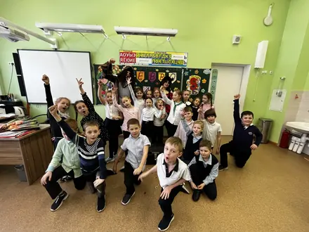
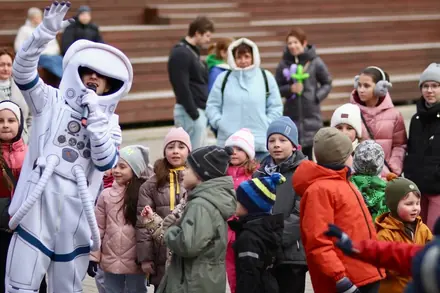
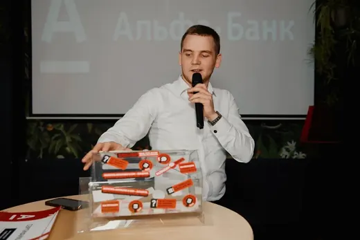
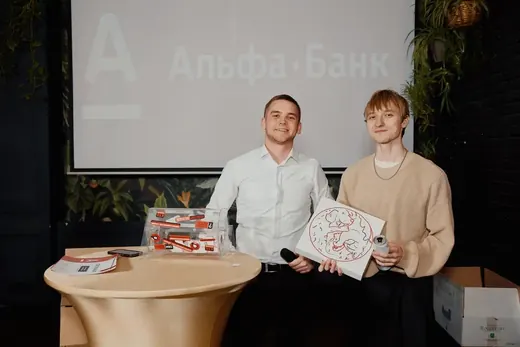

Приезжает герой, которого выбрал ваш ребёнок, — и следующие час-два дети его. Игры, миссии, соревнования, шоу с азотом или пеной, фотосессия в финале. А вы наконец сядете за стол и будете всё это снимать на телефон.
Наро-Фоминск и район. Напишете сегодня — сегодня и ответим, даже если праздник послезавтра.
Час программы — 5 500 ₽, с VIP-костюмом — 6 000 ₽. Шоу берут сверху: это отдельный номер со своим реквизитом, а не пять минут для галочки.

300 литров пены и фирменная пушка-акула с дистанционным запуском.
15 000 ₽
Азот −196 °C: облако по земле, вулкан из бутыли и мороженое на глазах у детей.
15 000 ₽
Две команды, луки и захват баз на улице. От 8 лет.
15 000 ₽
Полчаса пузырей и главный номер — ребёнок внутри пузыря.
7 000 ₽ · 30 минут
Ультрафиолет, неоновый аквагрим и танцы под то, что слушают дети.
6 000 ₽
Коробка с прозрачной стенкой: участник щупает вслепую, зал видит всё.
7 000 ₽ · 30 минутГерой приходит не «поиграть с детьми», а с миссией, и у каждой игры есть подводка: зачем ему нужна помощь именно этой компании. На одном дне рождения, который мы снимали целиком, это выглядело так: дети всем скопом собирали паутину, били молотом по силомеру, метали звёзды по мишени и в финале сложили руки в центр круга.

Костюмы — то, что родители хвалят чаще всего. Поэтому показываем их крупно и своими фотографиями: к вам приедет ровно то, что на карточке.
Дата, возраст, сколько будет детей. Андрей ответит в тот же день и скажет, свободно ли у него это время.
Кто любимый герой, кто из гостей стесняется, у кого аллергия. Из этих мелочей и собирается программа.
Держит её предоплата 20 %. Остальное отдадите после праздника, когда всё уже прошло.
Ведущий приезжает заранее, раскладывает реквизит и выходит к детям уже в образе. Вам готовить ничего не нужно.
Пена, азот, пузыри или дискотека — то, что выбрали. Обычно ставят ближе к финалу, когда дети уже разогрелись.
Фотосессия с героем и торт, если он у вас есть: выносит его тоже герой.
21 отзыв во ВКонтакте и на Авито. Вот четыре: как Андрей спас день рождения, как сын подружился с Человеком-пауком и почему костюмы хвалят отдельно. Остальные — здесь.
Андрей спас день рождения. Я видно в каком-то помутнении перепутала все время, одно наложилось на другое, в панике дозвонилась до Андрея, успокоил, нашел время в субботу, и спас день рождения, вернее он СДЕЛАЛ этот первый юбилей моей дочери незабываемым. У Андрея есть фишки на каждый возраст, подход к каждому ребенку и умение объединить их в общее дело.
Сыну на 4 года заказывали человека паука. Первый наш опыт с аниматором и такой удачный! С Андреем быстро согласовали детали и дату, отвечал сразу день в день, что в наше время редкость. Сын поначалу испугался, но со временем раскачался, в конце уже обнимался с человеком пауком. Андрей классно держал внимание детей, было весело и им, и взрослым.
Неоднократно на праздновании дней рождения моих детей он творил настоящее волшебство. 2–2,5 часа держать и детей, и взрослых на пике эндорфинов, приковывать внимание малышей — это могут далеко не все аниматоры нашего города, единицы.
Благодаря Андрею дни рождения моих детей прошли на ура! Костюмы шикарные, дочери очень понравился единорог. А программа для детей с 8 лет тоже шикарная.
Программа каждый раз пересобирается: дома это игры на ковре, в саду — блок для воспитателей и слёзы родителей, на площади — микрофон и сотня детей сразу.

Дома, в кафе или на площадке. Час-два программы и шоу под финал.

Программа на группу, поклон воспитателям, сладкая вата и дискотека.
Класс или параллель: микрофон, дискотека, лукотаг и шоу.

Сцена, микрофон и пенная пушка на большую площадь.

Детская зона, пока взрослые заняты своим вечером.

Дед Мороз со свитой, утренник для группы или визит домой с подарком.
Тот же Андрей ведёт и взрослые вечера — в костюме и с микрофоном. Ни одного конкурса, на который вы не согласились заранее. А детей на это время забирает аниматор: у них своя зона и своя программа.

Так бывает у малышей, и ведущий это знает: не бросается обнимать с порога, а даёт время присмотреться из-за маминой спины. Чаще всего к середине программы такой ребёнок уже в первом ряду. Мальчик четырёх лет сначала испугался Человека-паука, а в конце с ним обнимался — мама написала об этом отзыв.
Приходят компании от трёх лет и до двенадцати с лишним. Малышам берут Три кота, Щенячий патруль и ЛОЛ — там больше сказки и меньше беготни. Школьникам от восьми — лукотаг, «Кажется, нащупал» и неоновую дискотеку, иначе им скучно.
Обычная история: за столом и трёхлетка, и десятилетка. Ведущий делит активности так, чтобы младшие не потерялись, а старшие не заскучали, — про это в отзывах пишут чаще всего: «поймал волну каждого».
Дома, в кафе, в детском саду и школе, на площадках «Скворечник» и «Атлантида», на улице. Только пенная вечеринка и лукотаг просят улицу — остальное помещается и в квартире.
Минимум час. За час помещаются знакомство и первый блок игр; два часа — это уже полноценная история с соревнованиями, шоу и спокойным финалом. Родители в отзывах пишут про 2–2,5 часа, когда брали программу вместе с шоу.
Да, 20 % — ими и держится дата. Остальное отдаёте после праздника. Если отменить меньше чем за сутки, предоплата не возвращается: это время уже никому не продать.
По Наро-Фоминску дорога входит в стоимость. В Апрелевку, Селятино, Верею и Кубинку считается по цене такси до вашего адреса — или вы организуете трансфер. Сумму Андрей называет сразу, до предоплаты.
Место, где дети смогут бегать, розетка и предупреждение про аллергии, если в программе есть еда или грим. Костюмы, музыку, реквизит и расходники ведущий везёт свои — готовить вам ничего не надо.
Звоните. Однажды заказчица перепутала дату и позвонила в панике — Андрей нашёл окно в ту же субботу, и день рождения состоялся. Отвечаем в день обращения, но чем раньше напишете, тем больше выбор героев.
Да. Юбилеи, свадьбы и корпоративы ведёт Андрей — в костюме и с микрофоном. Детей на это время забирает аниматор: у них своя зона и своя программа.
Напишите, какой праздник и когда — Андрей ответит и скажет, свободно ли время. Отвечает в день обращения.